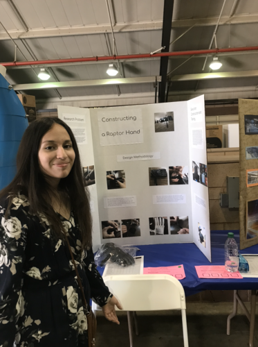
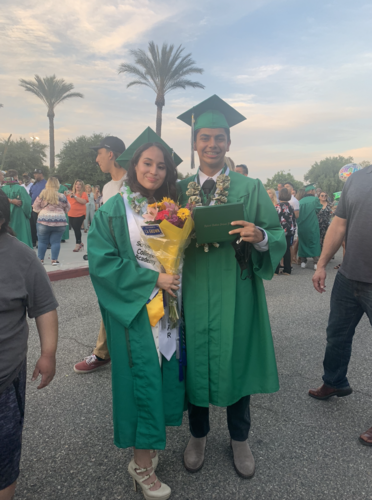
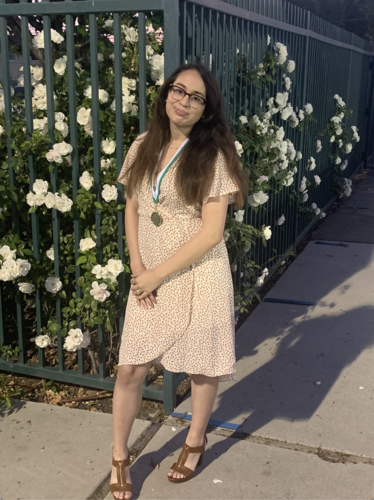
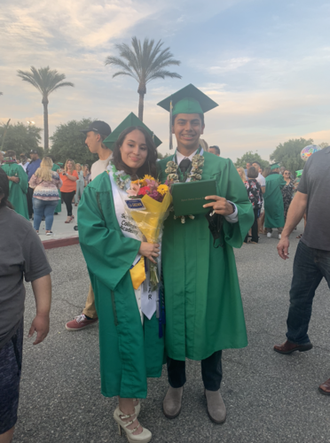
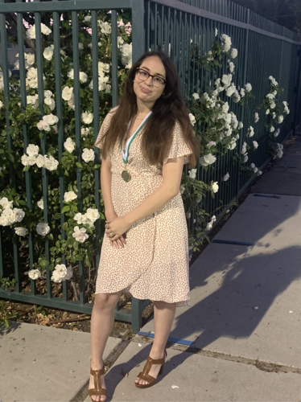

Brittney Samaniego
Hello, my name is Brittney Samaniego and I’m currently a second year student majoring in Pre-business and concentrating on accounting. I have a gpa of 3.8 unweighted, got 4 consecutive years of principal's honor roll and was considered top 10% of my graduating class. Down below is a glimpse of some of my experiences and some pictures depicting some of my accomplishments throughout the years. I had the privilege to attend the CUE 2018 convention consisting of new types of engineering projects and to design the t-shirts that would be given out to the participants. The following year I decided to embark on the journey of creating a 3D printed prosthetic arm for a 3 year old girl and won second place at the state science fair.
Currently, I’m involved with a couple clubs including the Latino Business Student Association, ASM Women in Business and Undergraduate Business Students. My experiences with these clubs I’ve gained more of an understanding with the world of business, marketing, the foundations of what determines a thriving business, and new business connections. For five years, I had the opportunity to join Scripps College Academy which helped me achieve my spot at the University of California Riverside and participate in some stem classes to further my education. Based on my experience, I have explored different aspects of business which furthered my qualifications as a future businesswoman. I was able to understand the needs of a customer, how to create an environment to entice more clients to buy more products, etc.
After spending around a year in the food industry, I decided to focus my attention on being more active with school and had the honor to fill the role as treasurer for the Latino Business Student Association. I learned how to cooperate with others to make business decisions and keep the club organized with assets and orders. Because of having some experience with my internship with UpMerch, I learned how to improve my marketing skills, collaborate closely with a design team, finance team and clients. I was able to improve the attendance of the participants in the club, create exciting new event ideas, and design new merch for several clubs and companies. In the meantime, I am furthering my knowledge with programs like Excel, Microsoft, Photoshop, and Github. I’m always excited to take upon new challenges and learn opportunities as I recently learned how to make and code my own website!
Experience
To-go/Host
• cooperated with all staff to ensure guests were assigned, satisfied with their service, and orders were packed correctly
• ensured special requests were honored
• organizing and completing walk-in/phone orders of customers
• amicably greeted and accompanied guests to assigned tables around 200-300 per shift
• bestowed menu and discussed special deals with guests while reassuring their needs to enjoy their meal
• promptly discussed and resolved any customer situations or complaints, involved management when needed
• systemized around 60-100 reservations per shift through phone or any other online platforms affiliated with company
• managed 3 phone lines and facilitated 20+ calls/day with customers and staff
• conscientiously handled POS system transactions and in charge of cashier balancing at end of the shift
Treasurer
• accurately creating treasurer reports which included statements for how much is spent at events, paid and unpaid bills, and the current amount in account
• meticulously balanced checkbook every time bank statements were received
• attentively kept track of all deposits, withdrawals, and transactions in checkbook
• thoughtfully created a budget for organization in conjunction with the executive board
• responsibly kept history of receipts and debt collection
Sales Partner
• communicated with clients and thoughtfully negotiated deals with influencers and clubs
• developed real-world business skills in marketing and finance
• ensured that clients were satisfied with orders and helped developed designs for their product
• managed up to 10 emails and calls a day to establish and grow business connections
Education
UC Riverside
University of California Riverside
Portfolio





